聊到Go语言，大家最津津乐道的可能就是它那"天生强大"的并发能力了。一个简单的 go 关键字，就能开启一个并发执行单元，这酸爽，谁用谁知道。但是，你有没有想过，这背后到底藏着什么样的魔法？为什么Go的并发可以如此轻盈、如此高效？
答案，就藏在它核心的 GMP调度模型里。
🧠 了解基础概念
🧵 从线程到协程
在聊GMP之前，我们得先搞明白两个老朋友：线程（Thread） 和 协程（Coroutine）。
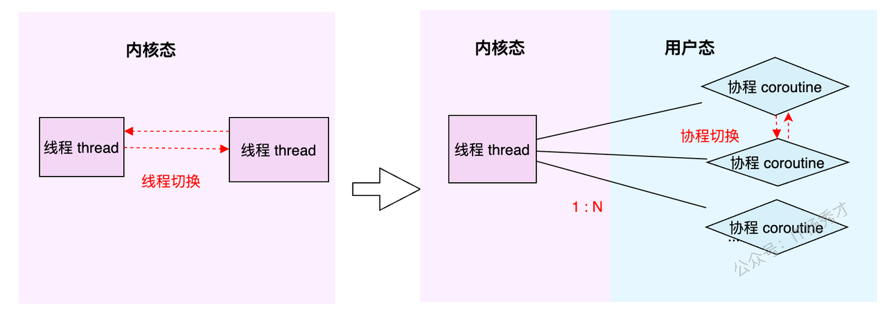
-
线程（Thread）：这家伙是操作系统的大内总管——内核（Kernel）眼里的最小执行单元。它的生老病死、工作调度，全得听内核的号令。你可以把它想象成一个正式工，有编制，但每次调度（切换）都得走一套复杂的流程，成本比较高。
-
协程（Coroutine）：这家伙更像是用户自己请的临时工。它活在用户态，比线程更轻量，可以理解为用户态线程。多个协程可以在一个线程上跑，它们的调度切换由用户程序自己说了算，不用去麻烦内核这个大忙人。所以，协程的切换开销极小，非常灵活。
简单总结一下：线程是内核级的，重而稳；协程是用户级的，轻而快。
🚀 goroutine
Go语言选择的并发实现，就是我们所熟知的 goroutine。你可以把它看作是Go对协程的"超级魔改版"。它并不是一个孤立的概念，而是整个 GMP调度体系 的核心产物。
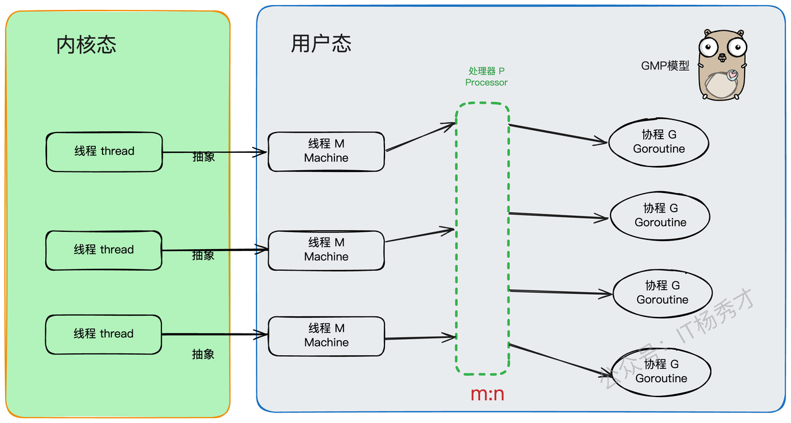
正是因为有了GMP这套精妙的架构，goroutine才拥有了超越原生协程的两大核心优势：
-
灵活的调度：G（goroutine）、M（Machine，内核线程）、P（Processor，处理器）三者之间可以动态地绑定和解绑，整个调度过程充满了弹性。Go runtime 负责调度，上下文切换延迟 0.2 微秒（线程 1-2 微秒），仅保存必要寄存器状态。
-
动态的栈空间：每个goroutine的栈空间可以根据需要自动伸缩，既方便使用，又极大地节约了内存资源。初始栈空间 2KB（线程 1MB+），支持百万级创建，启动销毁成本低。
更牛的是，Go语言在顶层完全屏蔽了线程这个概念，所有的并发操作都是围绕着goroutine来的，就像秦始皇统一了度量衡，Go也用goroutine统一了并发江湖的秩序。
💻 具体使用
在具体使用上调用函数的时候在前面加上go关键字，就可以为一个函数创建一个goroutine。
|
|
在程序启动时，Go程序就会为main()函数创建一个默认的goroutine。当main()函数返回的时候该goroutine就结束了，所有在main()函数中启动的goroutine会一同结束，所以在实际使用goroutine时需要特别注意其调度。
⛔ 什么时候会阻塞
goroutine 的阻塞和线程阻塞不是一回事。很多场景下，被挂起的是当前 goroutine，不是整个 OS 线程，这也是 Go 并发模型高效的关键之一。常见阻塞场景包括：
channel发送或接收：无缓冲channel没有配对方，或者有缓冲channel已满 / 已空时，当前 goroutine 会阻塞。- 系统调用与 I/O：例如文件 I/O、网络 I/O、阻塞式 syscall。
- 等待锁：例如等待
sync.Mutex。 - 显式休眠：调用
time.Sleep。 - 主动让出 CPU：调用
runtime.Gosched()。
这些阻塞点最终都会回到 Go runtime 的调度体系中处理，所以从效果上看，Go 能做到“一个 goroutine 挂起，其他 goroutine 继续跑”。
如果把这件事再说得更“调度器视角”一点，常见触发调度的时机就是四类：等待无缓冲 channel 的读写配对、因为 time.Sleep() 进入休眠、等待互斥锁释放，以及进入系统调用。它们本质上都会让当前 G 暂时离开 CPU，把执行权交还给调度器。
在循环中创建goroutine时需要尤其注意，goroutine 会捕获循环变量的引用，而非值。若循环内未正确处理，所有 goroutine 可能最终使用同一变量的最终值（而非各自迭代时的值）。
解决方案
- 通过参数传递数据到协程
|
|
- 定义临时变量
|
|
⏳ 生命周期
从调度视角看，goroutine 的生命周期可以概括为五个阶段：
- 创建：分配初始栈空间，初始化状态和调度信息。
- 运行：被某个 P 选中后，在绑定的 M 上执行。
- 阻塞：等待
channel、锁、网络 I/O 等资源时让出 CPU。 - 唤醒：等待条件满足后重新进入可运行队列，继续参与调度。
- 销毁：执行完成或异常退出后回收栈和状态对象，等待复用。
更细一点看，goroutine 通常会经历“创建 -> 可运行 -> 运行 -> 阻塞 / 再次可运行 -> 销毁”这样的状态流转。它不会一直绑定某个线程，而是交给调度器动态安排。
⚠️ panic 与 recover
goroutine 里出现 panic 时，首先终止的是当前 goroutine，但如果这个 panic 没有被 recover，最终仍然会导致整个进程退出。因此，实际工程里通常建议在关键子协程的入口处做好兜底恢复。
|
|
这里还有两个容易忽略的点：
- 子 goroutine 里的
panic不会自动被其他 goroutine 处理，必须在它自己的调用栈里recover。 WaitGroup只能等待结束，不能处理panic。- 如果原函数已经
panic，而defer里又发生新的panic，后者会覆盖前者，最终看到的是defer里的异常。
📏 栈增长机制
goroutine 之所以轻量，很大一部分原因就在栈。
- 默认初始栈很小：Go 1.19+ 的 64 位系统上，goroutine 初始栈通常为
2 KB，32 位系统通常为1 KB。 - 栈是动态伸缩的：随着函数调用加深、局部变量变多，runtime 会在栈不足时分配更大的新栈，并把活跃栈帧迁移过去。
- 扩栈通常按倍数增长：常见做法是扩到原来的
2倍，避免频繁扩容。 - 线程栈通常是固定大栈：OS 线程往往在创建时就预留
1 MB到2 MB级别的栈空间，而 goroutine 不需要一开始就占这么多内存。
也正因为 goroutine 的初始成本低、切换主要发生在用户态，所以 Go 才能在一个进程里轻松承载海量并发任务。
⚙️ 调度模型
线程模型：根据运行的环境和调度者的身份，线程可分为用户级线程和内核级线程，用户级线程在用户态创建、同步和销毁，由线程库来调度。内核级线程则运行在内核空间，由内核来调度，在有的系统上也称为LWP(轻量级进程）。当进程的一个内核级线程获得CPU的使用权时，它就加载并运行一个用户级线程，可见，内核级线程相当于用户级线程的容器，一个进程可以拥有M个用户级线程和N个内核级线程。按照M:N的取值，可分为三种线程模型
- N:1 模型：即N个协程对应1个内核级线程。该模型完全在用户空间实现，线程库负责管理所有的执行线程，比如线程的优先级、时间片等。线程库利用longjmp来切换线程的执行，使得看起来像是并发执行，但实际上内核仍然是把整个进程作为最小单元调度的，该进程的所有执行线程共享进程的时间片，对外表现出相同的优先级。
- 优点：线程切换在用户态完成，创建和调度线程都无需内核的干预，不会对系统性能造成明显的影响
- 缺点
- 对于多处理器系统，一个进程的多个线程无法运行在不同的CPU上，无法充分利用CPU多核的算力。
- 1个进程的所有协程都绑定在1个线程上，一旦某协程阻塞，造成线程阻塞，本进程的其他协程都无法执行了，无并发能力
- 1:1 模型：即每个用户级线程对应一个内核级线程例如
Java Thread。该模型完全由内核创建和调度线程，用户空间的线程库不需要进行进程管理。- 优点：充分利用CPU的算力资源，支持多核
- 缺点：开销大，线程切换要陷入内核导致线程上下文切换较慢，数量上限受内核限制
- N:M 模型：即前两种模型的结合，M个用户线程对应N个内核级线程的双层调度模式。该模式内核调度M个内核线程，线程库调度N个用户线程。Go语言采用这种模型
- 优点：充分结合前两种模式的优点，不但不过分消耗内核资源，而且线程切换速度也比较快，充分利用多处理器的优势
- 缺点：该模型的调度算法复杂。
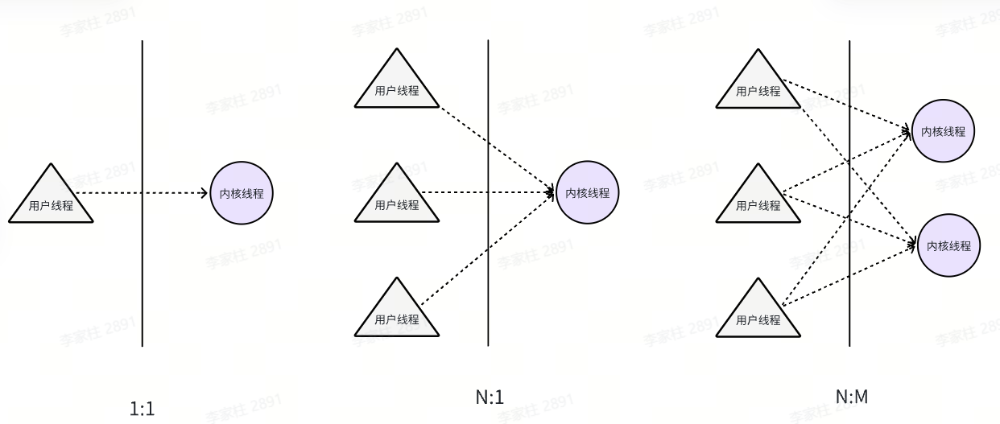
🕰️ Go1.1之前的GM模型
在 Go 1.1版本之前，其实用的就是GM模型。
- G：协程，通常在代码里用
go关键字执行一个方法，那么就等于起了一个G。 - M，内核线程，操作系统内核其实看不见
G和P，只知道自己在执行一个线程。G和P都是在用户层上的实现。
除了 G 和 M 以外，还有一个全局协程队列，这个全局队列里放的是多个处于可运行状态的 G 。M 如果想要获取 G ，就需要访问一个全局队列。同时，内核线程M是可以同时存在多个的，因此访问时还需要考虑并发安全问题。因此这个全局队列有一把全局的大锁，每次访问都需要去获取这把大锁。并发量小的时候还好，当并发量大了，这把大锁，就成为了性能瓶颈。
🏗️ GMP 架构全景图
好了，主角登场！GMP，顾名思义，就是 Goroutine + Machine + Processor。
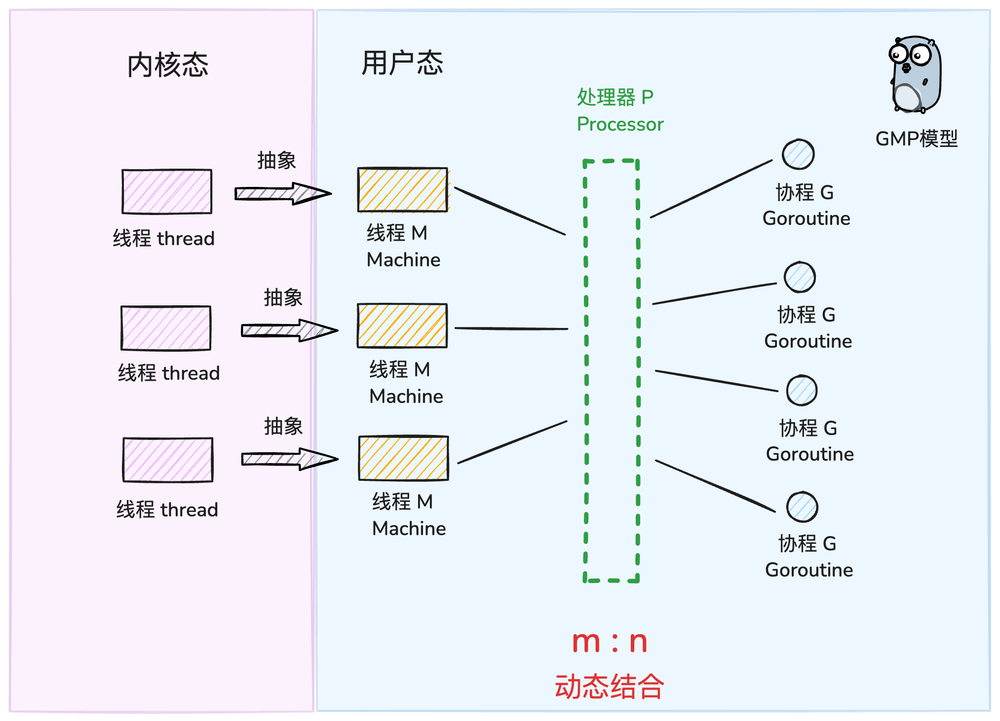
-
G（Goroutine）：就是我们的"任务单元"。它有自己的执行栈、生命状态，以及要完成的具体工作（就是你
go后面跟的那个函数）。GG 并非执行体，需要绑定到M上才能运行，你可以把M想象成G的CPU。 -
M（Machine）：你可以把它看作Go对系统线程的封装，是真正干活的"工人"。作为OS 线程抽象，代表着真正执行计算的资源，由内核进行调度。M需要和P"绑定"后，才能进入GMP的调度循环。M的工作很简单，就是在
g0（一个特殊的goroutine，负责调度）和普通的G之间反复横跳：执行g0时，它在找任务；执行普通G时，它在处理任务。 -
P（Processor）：P是调度器，是GMP模型中的"中枢大脑"。M必须获取到一个P，才能开始调度和执行G。P的数量决定了同一时间最多有多少个M可以处于运行状态，这个数量通常由
GOMAXPROCS环境变量决定。但是不论GOMAXPROCS设置为多大，P的数量最大为256个。P还有一个非常重要的职责：它自带一个本地的goroutine队列，我们称之为 LRQ (Local Run Queue)。
✨ GMP 的核心优势
从更高一层看，GMP 的价值不只是“能调度 goroutine”，而是它把 Go 的高并发能力建立在了一个成本更低、控制力更强的运行时模型上：
- 轻量级调度：goroutine 的切换主要发生在用户态，通常只需要保存和恢复少量寄存器信息，开销远小于线程切换。
- 用户态调度：调度逻辑主要由 Go runtime 自己完成，不需要每次都陷入内核，因此更灵活，也减少了系统调用带来的成本。
- 多核并行能力：P 的数量通常由
GOMAXPROCS控制，每个 P 在同一时刻都可以支撑一个 goroutine 真正并行执行。 - 更适合高并发场景：海量 goroutine 可以复用少量线程运行，这也是 Go 能轻松承载成千上万并发任务的根本原因。
不过也要注意一点：对于 CPU 密集型任务，并发数并不是越大越好。GMP 能充分利用多核 CPU，但最优并发度通常仍然接近 CPU 核数，它真正擅长的场景还是“高并发 + 大量等待 / 阻塞”的任务模型。
🗃️ G、M、P 各自保存什么
如果把 GMP 看成一套调度系统，那么 G、M、P 三者各自维护的信息也非常不同：
- G：保存 goroutine 的执行上下文，例如栈指针、程序计数器、运行状态，以及与调度相关的信息。
- M：保存线程级上下文，例如线程 ID、当前运行的 G、绑定的 P，以及用于调度的
g0。 - P：保存调度资源，例如本地运行队列、计时器、内存分配上下文
mcache，以及部分 GC 相关状态。
换句话说，G 更像“任务”，M 更像“工人”，P 更像“调度中枢 + 资源容器”。三者拆开设计之后，Go runtime 才能同时做到高吞吐、低锁竞争和动态调度。
📊 G、M、P 的状态概览
除了组件职责不同，三者在运行时也有各自的状态机：
- G 的常见状态：
_Gidle、_Grunnable、_Grunning、_Gsyscall、_Gwaiting、_Gdead。 - M 的常见状态：运行中、空闲、自旋找活、陷入系统调用、被 GC 暂停等。
- P 的常见状态：
_Pidle、_Prunning、_Psyscall、_Pgcstop、_Pdead。
这些状态并不是孤立存在的。比如一个正在运行的 G 发起系统调用时，G 可能转入 _Gsyscall，对应的 M 进入 syscall 相关状态，P 则会被解绑并尝试转交给其他 M。后面你在源码部分看到的很多调度逻辑，本质上都是围绕这些状态切换展开的。
🧭 GMP 的工作流程
从流程上看，一个 goroutine 在 GMP 中的大致路径可以概括成下面几步：
- 程序启动：runtime 初始化
M0、G0，并按GOMAXPROCS创建一组 P。 - 创建 G：执行
go func()时，runtime 创建新的 G，并优先放入当前 P 的本地队列。 - 调度执行：M 绑定某个 P 后，从本地队列、全局队列、
netpoll或其他 P 的队列中取出可运行 G。 - 发生阻塞：如果 G 等待 I/O、锁、
channel或 syscall，它会让出执行权，调度器转去执行其他 G。 - 被重新唤醒：等待条件满足后，G 被重新放回可运行队列，再次参与调度。
这个流程听起来很简单，但它背后真正厉害的地方在于：队列是分层的、资源是可转移的、阻塞是可让渡的、长时间运行的任务还能被抢占。也正是这些设计共同组成了 Go 的并发调度能力。
可以把这套流程再压缩成一句话：M 必须先绑定 P 才能执行 G；每个 P 都维护自己的本地运行队列，长度上限是 256；当本地队列取空后，M 会按“本地队列 -> 全局队列 -> netpoll -> 其他 P 的本地队列”这个优先级继续找活，这就是 Go runtime 的典型调度路径。
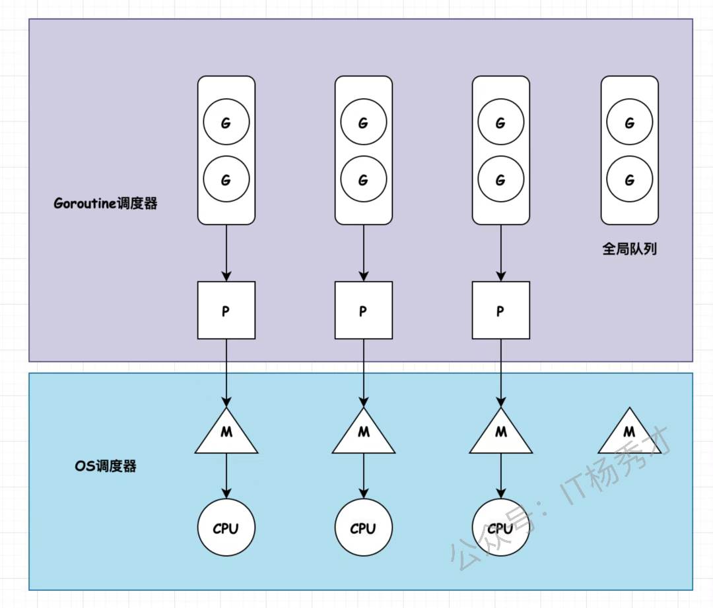
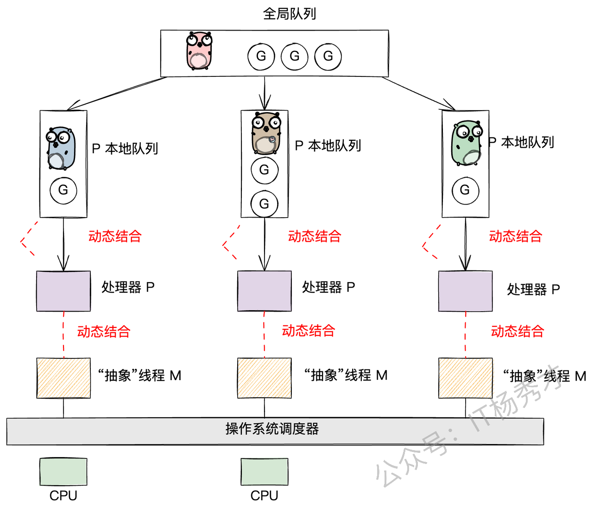
提示
我们可以把GMP理解为一个任务调度系统.
- G就是这个系统中所谓的 任务 ，是一种需要被分配和执行的"资源"
- M就是这个系统中的"引擎"，当M和P结合后，就限定了引擎的运行是围绕着GMP这条轨道进行的，使得引擎运行着两个周而复始、不断交替的步骤——寻找任务（执行g0），执行任务（执行g）
- P就是这个系统中的"中枢"，当其和作为"引擎" 的M结合后，才会引导引擎进入GMP的运行模式；同时 p 也是这个系统中存储"任务"的"容器"，为"引擎"提供了用于执行的任务资源。
P和M的数量
- P的数量：由启动时环境变量
$GOMAXPROCS或者是由runtime的方法 **GOMAXPROCS()**决定。这意味着在程序执行的任意时刻都只有$GOMAXPROCS个goroutine在同时运行。 - M的数量
- go语言本身的限制：go程序启动时，会设置M的最大数量，默认10000.但是内核很难支持这么多的线程数，所以这个限制可以忽略。
- runtime/debug中的
SetMaxThreads函数，设置M的最大数量 - 一个M阻塞了，会创建新的M。
P和M的创建时机
- P 是在调度器初始化阶段统一创建出来的。runtime 会在
schedinit()里调用procresize()，按照GOMAXPROCS初始化allp数组；之后只有在显式调整runtime.GOMAXPROCS()时，P 的数量才会重新分配。 - M 则是按需创建的。程序启动时先有
m0，后续如果发现没有空闲 M 可以绑定 P，或者已有 M 大量阻塞在 syscall 中，但系统里仍有可运行的 G，就会通过startm()、newm()、newosproc()拉起新的系统线程，最后从mstart()进入调度循环。
M0和G0
M0是启动程序后的编号为0的主线程，这个M对应的实例会在全局变量runtime.m0中，不需要在heap上分配，M0负责执行初始化操作和启动第一个G（main）， 在之后M0就和其他的M一样了。G0是每次启动一个M都会第一个创建的goroutine，G0仅用于负责调度的G，G0不指向任何可执行的函数, 每个M都会有一个自己的G0。在调度或系统调用时会使用G0的栈空间, 全局变量的G0是M0的G0
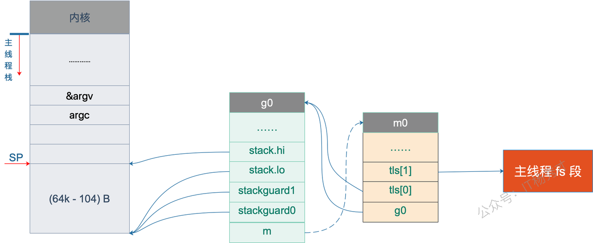
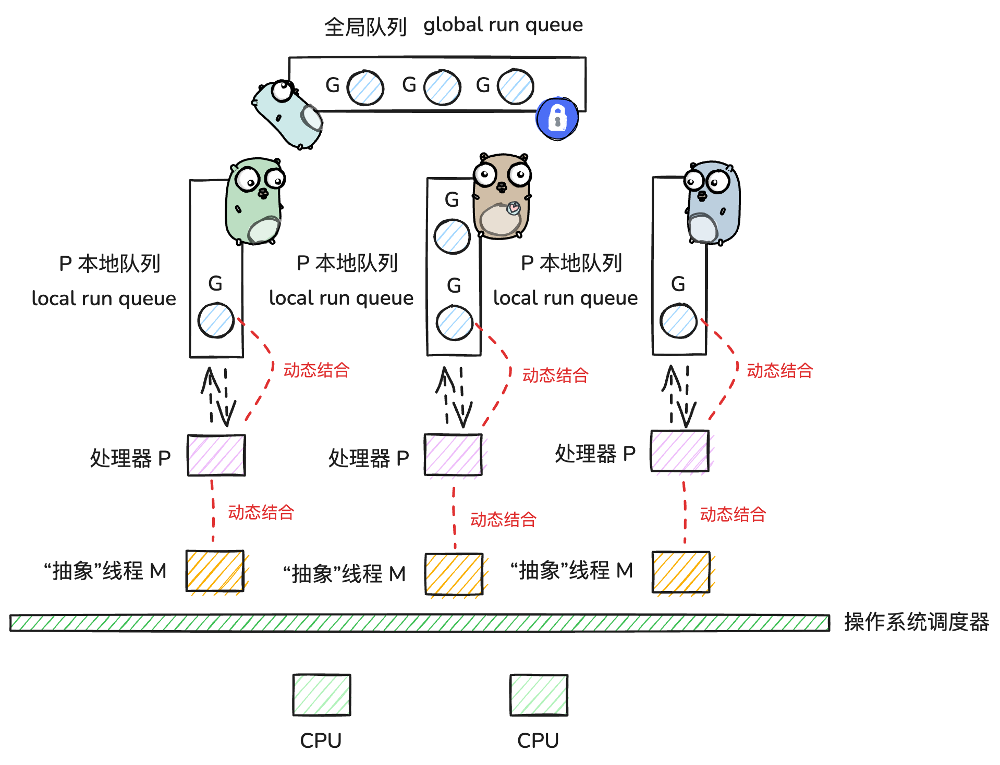
上图中有三个工作线程M，每个工作线程M持有一个处理器P，并且每个M持有一个协程G正在运行。每个处理器P持有一个运行队列，包含待调度的协程G，除此以外，还会有一个全局的队列，包含待调度的协程，被多个处理器P共享。
通常而言，每个处理器P上的协程G，若要创建新的协程，新创建的协程会放入到本地的运行队列中。当本地的队列满了，或者阻塞的协程被唤醒，协程会被放到全局的队列中。处理器P除了会消费本地队列中的协程P以外，还会周期性的消费全局队列中的协程G，避免全局队列中的协程P"饿死"。
🗂️ 存放G的"容器"
现在，我们把目光聚焦到存放G的"容器"上。Go的设计非常巧妙，它有两种队列：
-
P的本地队列（LRQ - Local Run Queue）：这是每个P私有的G队列。当一个M想执行G时，会优先从自己绑定的P的LRQ里找。因为是私有的，所以大部分时间不需要加锁，通过高效的CAS（Compare-And-Swap）操作就能完成存取，大大减少了并发冲突。当然，也并非完全没有冲突，因为当一个P的LRQ空了的时候，它可能会从其他P的LRQ里"偷"一些G过来，这就是著名的 work-stealing 机制。
-
全局队列（GRQ - Global Run Queue）：这是一个全局共享的G队列。当一个P的LRQ满了，新创建的G就会被放到GRQ里。因为是全局共享的，所以所有M都可能来访问，竞争激烈，因此访问它需要加一把全局大锁。
📥 G的存放与获取逻辑
G的存放与获取逻辑：
-
放G（put g）：当你在一个goroutine里通过
go func(){...}创建一个新的goroutine时，它会优先被放到当前P的LRQ里。如果LRQ满了，没办法，只能加个全局锁，把它扔到GRQ里去。这遵循的是"就近原则"。 -
取G（get g）：当M上的
g0开始找活干时，它会遵循一个"负载均衡"的策略，按以下顺序来寻找G：-
先从当前P的LRQ里找（无锁，速度最快）。
-
如果LRQ没有，就去全局GRQ里看看（需要加锁）。
-
如果GRQ也没有，就去网络轮询器（netpoll）里找找有没有因为IO操作而就绪的G。
-
每个协程中产生的新协程，会被优先调度到本地的运行队列中，因此可能会出现，部分处理器 P 本地队列很大，部分处理器本地队列很小甚至为空的情况。因此 go 调度器实现了当处理器 p 本地队列为空时，窃取别的队列中的协程 G 的策略（work-stealing，无锁）。从别的P的LRQ里偷一半过来。如图所示，M1 对应的本地队列为空，此时它会查看全局队列中是否有协程需要调度，如果也没有，则会从别的正在运行的 P 中窃取一半的协程 G，窃取结果如图所示。
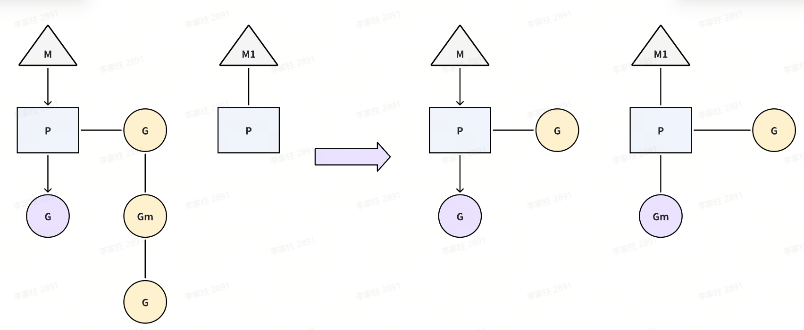
- 为避免某个协程长时间执行，而阻碍别的协程被调度，监控线程sysmons会监控每个协程的运行时间，一旦运行时间过长（超过10ms）且有其他协程在等待时，会将运行中的协程暂停，转而调度等待的协程，达到类似于时间片轮转的效果
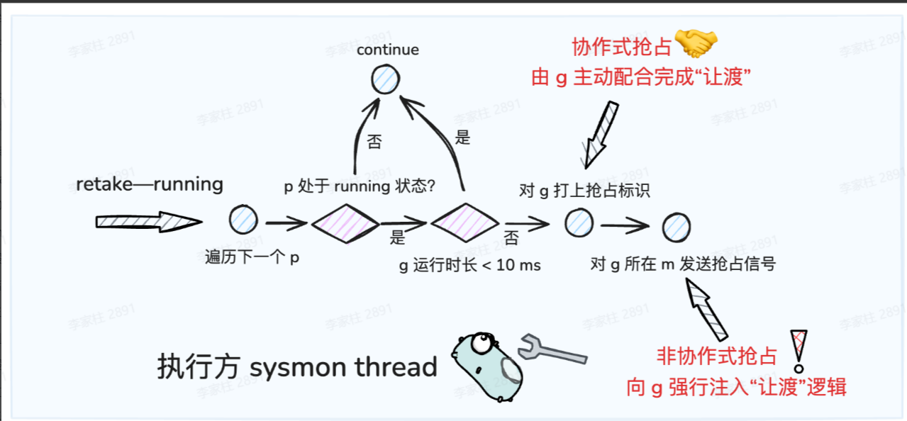
-
每个处理器P维护一个待调度协程G的队列，依次调度协程G到M中执行。这里有个小细节：同时，每个P会周期性的查看全局队列中的待运行协程G，防止全局队列中的G长时间得不到调度机会而饿死。为了防止GRQ里的G被"饿死"（因为M上的g0总是优先从LRQ取），调度器规定，每进行61次调度循环，就必须强制去下一次去grq取 。这样做是为了避免lrq过于繁忙，而导致grq中的g“饿死”。
如果换成 runtime 里的函数名来理解，这个流程基本就是：先在当前 P 上通过 runqget 拿 G，不够再去全局队列里 globrunqget，随后检查 netpoll，最后再进入 work-stealing，从其他 P 的本地队列里偷一半任务回来。这也是 findrunnable() 背后最核心的查找顺序。
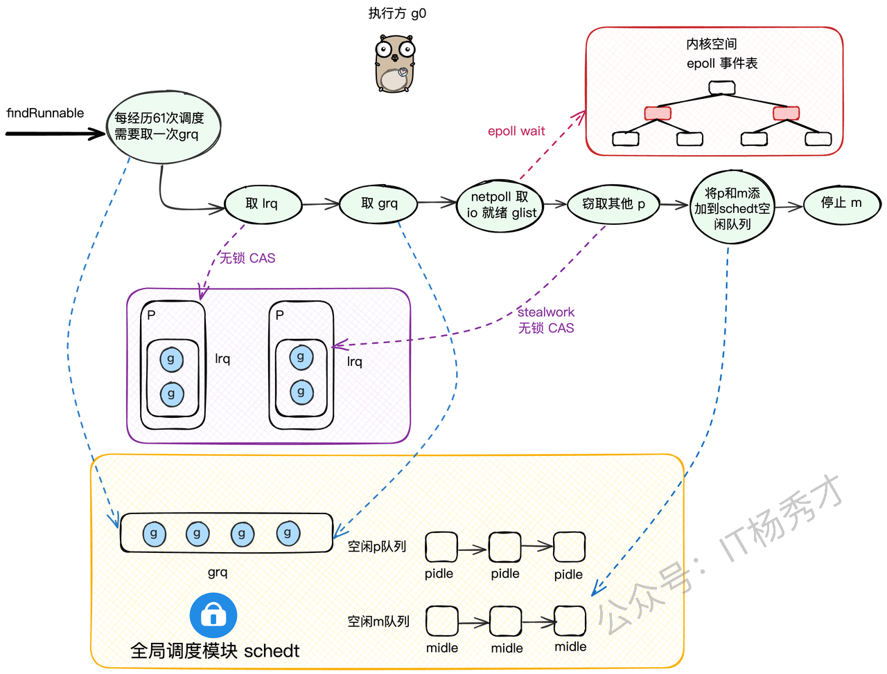
提示
为什么P的逻辑不加在M上？
主要还是因为 M 其实是内核线程，内核只知道自己在跑线程，而golang的运行时（包括调度，垃圾回收等）其实都是用户空间里的逻辑。操作系统内核哪里还知道，也不需要知道用户空间的golang应用的内部。这一切逻辑交给应用层自己去做就好，毕竟改内核线程的逻辑也不合适啊。
🌐 GMP 生态圈
在Go的世界里，GMP是绝对的基石。所有上层的建筑，比如内存管理、并发工具等，都是围绕着GMP模型来精心设计的。
🧮 内存管理
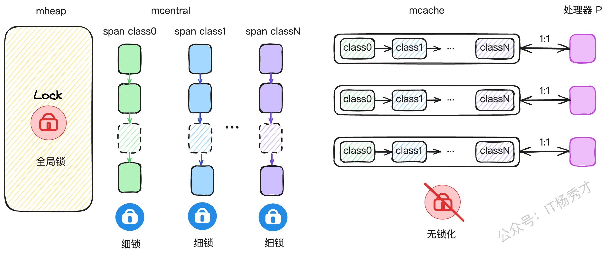
Go的内存管理借鉴了Google自家的TCMalloc思想，并为GMP模型量身定做了优化。它为每个P都配备了一个私有的内存缓存——mcache。当一个P上的G需要分配小对象时，可以直接从这个私有的mcache里拿，完全无锁，速度飞快。
🔒 并发工具（Mutex, Channel）
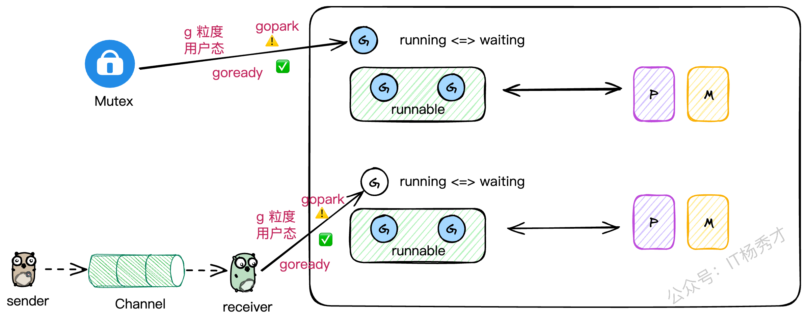
你有没有想过，为什么在Go里一个channel的读写阻塞了，或者一个Mutex锁住了，并不会把整个线程都卡死？
这就是因为Go的并发工具都是"G级别"的。当一个G因为这些操作需要阻塞时，它会被挂起，让出M的执行权。M会立刻去寻找并执行其他的G，整个过程都在用户态完成，无需内核介入。这极大地提升了并发性能。
我最近在用C++尝试模拟GMP时，就深有感触。C++标准库里的锁，一旦锁住，阻塞的是整个线程，这会导致线程上所有其他的协程都得干等着。想要实现Go这种效果，就得重写所有并发工具，成本巨大。这也反向证明了Go在并发设计上的优越性。
🌊 IO 多路复用（netpoll）
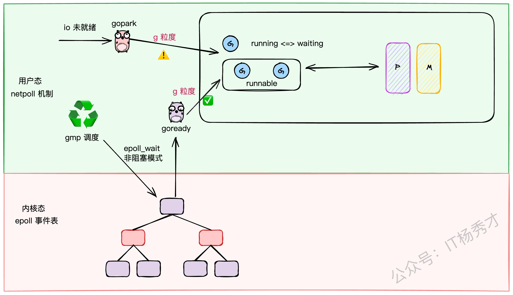
对于网络IO，Go采用了Linux下性能强悍的epoll技术。但为了避免epoll的等待操作阻塞整个M，Go设计了一套巧妙的netpoll机制。它将IO阻塞操作转换成了G级别的阻塞（gopark），当IO就绪时，再通过goready唤醒对应的G。这样，IO操作也被完美地融入了GMP的调度体系中。
可以说，不理解GMP，就无法真正理解Go语言的精髓。
🔬 深入源码：GMP 的底层结构
理论说了一大堆，我们现在就潜入源码，看看G、M、P在 runtime/runtime2.go 文件里到底长什么样。
🧩 G 的结构（goroutine）
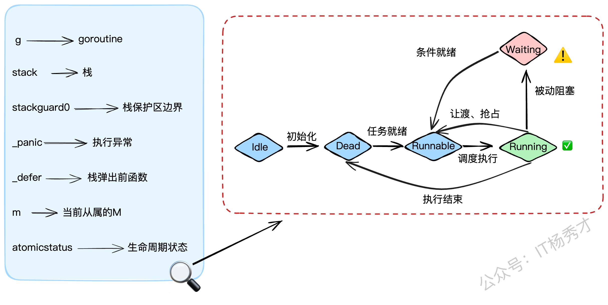
g结构体是goroutine的实体，我们来看看它的关键字段：
-
stack: 描述了goroutine的栈空间信息（起始和结束地址）。 -
stackguard0: 栈的警戒线。当goroutine的栈使用量将要越过这条线时，就会触发栈扩容。同时，它也被用来标记"抢占请求"。 -
_panic: 用来记录goroutine中发生的panic。 -
_defer: 用链表的形式存储了goroutine中的defer操作（后进先出）。 -
m: 指向当前正在执行它的M。如果G没在运行，这个字段就是nil。 -
atomicstatus: G的生命周期状态，比如_Gidle、_Grunnable、_Grunning、_Gwaiting等。
|
|
🔧 M 的结构（Machine）
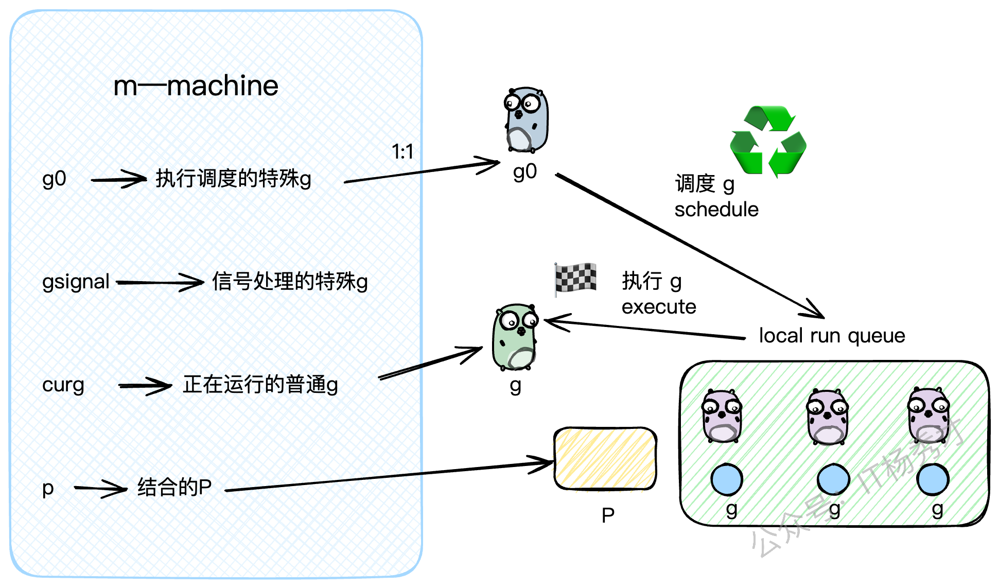
m结构体是内核线程的抽象，核心字段如下：
-
g0: 一个非常特殊的G。每个M都有一个自己的g0，这个g0不执行用户代码，它的任务就是执行调度逻辑，为M寻找下一个要运行的普通G。 -
gsignal: 另一个特殊的G，专门用来处理分配给这个M的信号。 -
curg: 指向当前M上正在运行的那个普通的用户G。 -
p: 指向当前与M绑定的P。
|
|
你可以把M的运行过程想象成两个状态的切换：当它在执行 g0 时，它在扮演"调度者"的角色；当它在执行 curg 时，它在扮演"执行者"的角色。
🔗 P 的结构（Processor）
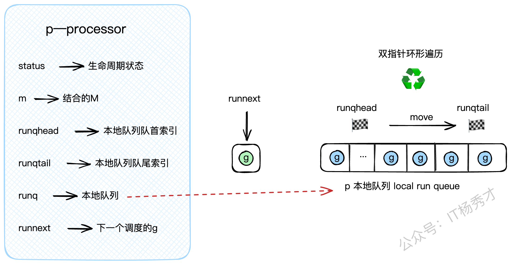
p结构体是调度器，是连接G和M的桥梁，核心字段如下：
-
status: P的生命周期状态，如_Pidle、_Prunning等。 -
m: 指向当前与它绑定的M。 -
runq: P的私有G队列，也就是我们前面说的LRQ，它是一个定长的数组，可以存放256个G。 -
runqhead,runqtail: LRQ的头尾索引，用来实现一个环形队列。 -
runnext: LRQ里的一个"VIP通道"。通过runqput放入的下一个G会优先放在这里，调度器会首先检查runnext是否有G，有的话直接拿来执行，可以省去操作runq队列的开销。
|
|
🎛️ 全局调度器（schedt）
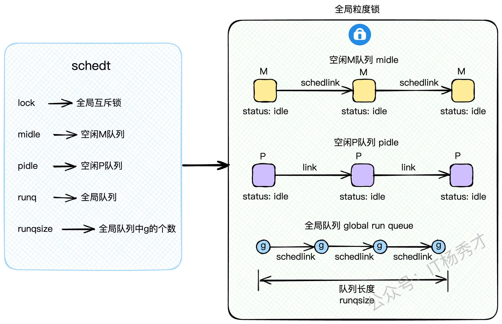
除了G、M、P这三大组件，还有一个全局的 schedt 结构体，它掌管着全局资源，访问它需要加锁。
-
lock: 全局互斥锁。 -
midle: 空闲的M队列，没活干的M会在这里排队。 -
pidle: 空闲的P队列，没活干的P也在这里排队。 -
runq: 全局G队列，也就是GRQ。 -
runqsize: GRQ里G的数量。
|
|
midle和pidle`的设计是为了资源的复用和节能。当系统不忙时，空闲的M和P会被放进这两个队列里"休眠"，避免CPU空转，等到有新任务时再被唤醒。
🧭 正向追踪：一个 G 的诞生与调度
好了，基础结构我们都看完了。现在，让我们切换到第一人称视角，看看一个我们用 go func(){...} 创建的goroutine，是如何一步步被调度并执行的。这个过程，可以看作是从 g0到 g的转换。
🎯 main 函数的特殊性
main函数是所有Go程序的入口，它比较特殊。它是由一个全局唯一的 m0（主线程）来执行的。源码位于 runtime.proc.go
|
|
🐣 普通 G 的创建
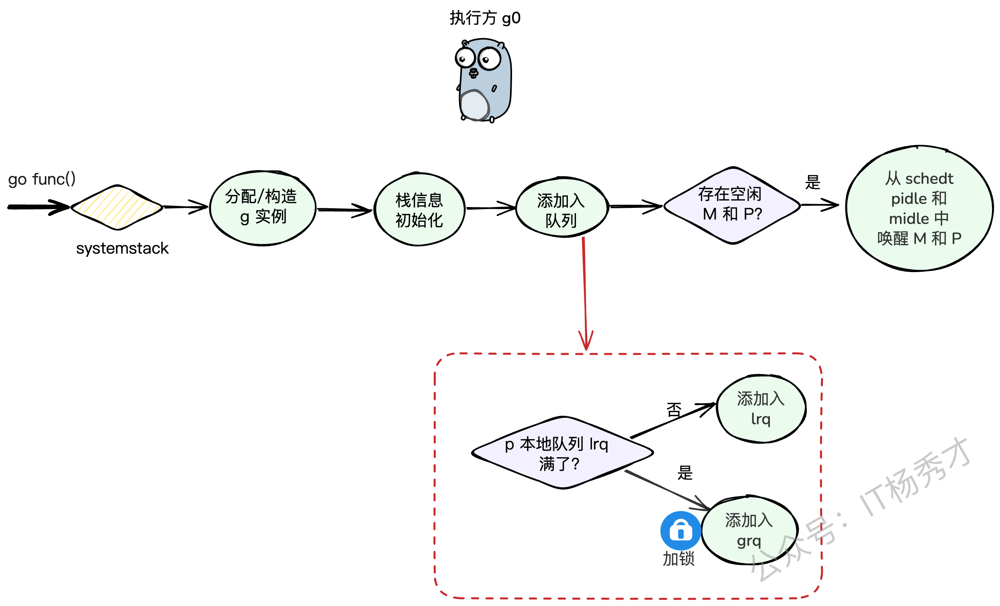
除了main这个特例，我们自己启动的goroutine都会经历一个标准的创建流程。比如这段代码：
|
|
编译器会把 go func() 转换成对 runtime.newproc 函数的调用。这个函数的核心逻辑如下：
-
切换到
g0栈：newproc会先通过systemstack把自己从当前的用户G栈切换到M的g0调度栈上。因为创建G是调度层面的工作，得由专业的g0来干。 -
创建G实例：在
g0栈上，调用newproc1来创建一个新的g结构体实例，并做好初始化工作，比如设置好要执行的函数入口地址、程序计数器等。 -
放入就绪队列：新创建的G需要被放到一个就绪队列里，等待被调度。这里会调用
runqput函数。 -
runqput的逻辑：-
它会优先尝试把新的G放到当前P的
runnext这个VIP位置。 -
如果
runnext被占了，它会尝试把G放到当前P的LRQ的队尾。 -
如果LRQ也满了，那没办法，只能加个全局锁，把这个G和LRQ里的一半G都转移到全局队列GRQ里去（这个操作叫
runqputslow）。
-
-
唤醒休眠的P：如果此时有P因为没事干而处于休眠状态，
wakep函数会负责唤醒一个P来处理这个新任务。 -
切回用户G栈：
systemstack执行完毕，切回到原来的用户G，继续执行它自己的代码。
|
|
🔁 从 g0 到 g 的切换
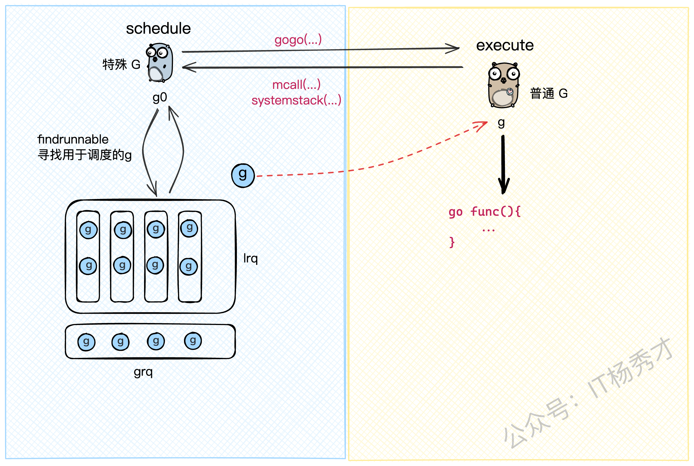
每个M都有一个自己的g0，g0的工作就是不断地调用schedule函数来寻找可执行的G。所以，一个M的生命周期，就是在执行g0（找任务）和执行普通g（做任务）之间循环往复。
这个切换过程有两个关键的"桩函数"：
-
mcall,systemstack: 实现从g切换到g0。 -
gogo: 实现从g0切换到g。
我们从g0的视角来看，它主要做两件事：
-
schedule(): 调用findrunnable()方法，从各个队列里找到一个可执行的G。 -
execute(): 找到G之后，更新上下文信息（比如把m.curg指向找到的G），然后调用gogo，把M的CPU执行权从g0交到这个G手上。
也可以把 Go scheduler 直接理解成 Go runtime 内嵌的协程调度器。它不负责执行业务逻辑，只负责两件事：决定“下一个该跑哪个 G”，以及决定“什么时候把当前 G 切走”。因此 schedule() 更像“挑任务”，而 execute() 更像“正式切换执行权”。
上述方法均实现于 runtime/proc.go 文件中：
|
|
从栈切换角度看，mcall() 和 gogo() 并不是简单的函数调用，而是在用户 G 的栈和 g0 的调度栈之间切换 SP、PC 等寄存器，并把现场保存在 gobuf 里。也正因为如此，调度器既能安全地离开当前 G，又能在将来准确恢复到它之前停下的位置。
🔍 寻找 G 的漫漫长路：findrunnable
findrunnable是调度循环中最核心的函数，它寻找G的策略体现了Go调度器的智慧。
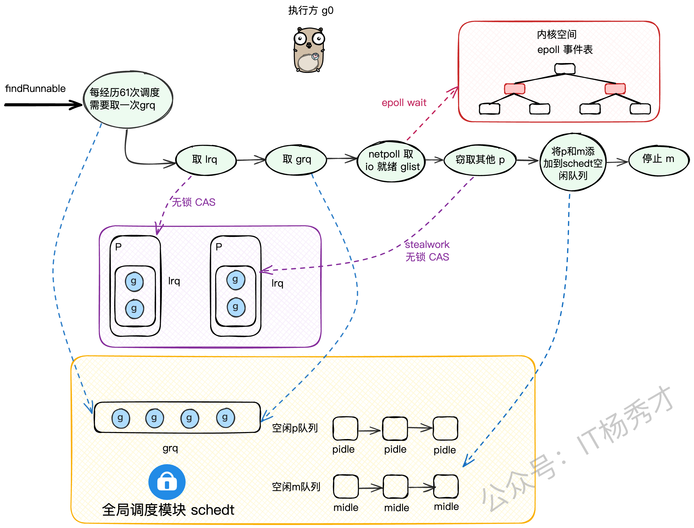
我们来梳理一下它的寻找步骤：
-
检查全局队列（GRQ）：还记得吗？每61次调度循环，必须先从全局队列
globrunqget拿一个G，防止GRQ饥饿。（需要加锁） -
检查本地队列（LRQ）：从当前P的LRQ里
runqget一个G。（无锁CAS） -
再次检查全局队列（GRQ）：如果本地没有，再去全局队列里
globrunqget找。（需要加锁） -
检查网络轮询器（netpoll）：如果还没有，就去
netpoll里看看有没有因为网络IO就绪的G。（非阻塞模式） -
从别的P偷（work stealing）：如果还找不到，就只能启动
work stealing机制，随机找一个别的P，从它的LRQ里偷一半的G过来。 -
再次double check全局队列：偷完之后，再最后看一眼全局队列。
-
进入休眠：如果以上所有努力都失败了，说明系统现在真的很闲，
findrunnable会：-
把当前的P设置为
_Pidle状态，并把它放到全局的pidle队列里。 -
在把当前M也休眠之前，会做最后一次挣扎：以阻塞模式调用
netpoll，看看能不能等到一个IO事件。 -
如果连阻塞等待IO都没用，那就彻底死心了，把当前M也放到全局的
midle队列里，然后调用stopm让M休眠，交出线程控制权。
-
这个过程设计得非常精妙，既保证了任务获取的高效性（优先无锁操作），又实现了负载均衡（work-stealing），还能在系统空闲时自动缩容，节省资源。
📚 findRunnable 函数详解
Go调度器的核心在于findRunnable函数，这个函数负责为当前的处理器P找到一个可执行的goroutine。整个过程遵循着严格的优先级顺序，确保系统的公平性和效率。
|
|
📍 本地队列获取策略
从本地队列获取goroutine是最高效的方式，因为不需要加锁。runqget函数采用了巧妙的双重策略：
|
|
这里有个有趣的设计：runnext是一个特殊位置，专门存放高优先级的goroutine，比如刚刚创建的新goroutine。这样设计可以提高响应性。
⚖️ 全局队列的公平调度
当本地队列为空时，调度器会转向全局队列。但这里有个重要的防饥饿机制：
|
|
🌐 网络 I/O 事件处理机制
在 gmp 调度流程中，如果 lrq 和 grq 都为空，则会执行 netpoll 流程，尝试以非阻塞模式下的 epoll_wait 操作获取 io 就绪的 g。该方法位于 runtime/netpoll_epoll.go：
|
|
这个机制让Go程序能够高效处理大量并发连接，而不需要为每个连接分配单独的线程。
🥷 从其他的 P 队列窃取 G
当本地队列和全局队列都为空时，并且执行完 netpoll 流程后仍未获得 g，则会尝试从其他 p 的 lrq 中窃取半数 g 补充到当前 p 的 lrq 中。工作窃取算法是负载均衡的关键，它确保了系统中的处理器都能保持忙碌状态。
|
|
♻️ 回收空闲 P 和 M
再执行完上述逻辑之后，如果还是未能获取到可运行的g，系统需要妥善处理空闲的P和M，此时会将 p 和 m 添加到 schedt 的 pidle 和 midle 队列中并停止 m 的运行，避免产生资源浪费
|
|
↩️ 逆向追踪：G 的让渡艺术
有借有还，再借不难。G拿到了M的执行权，也得在适当的时候还回去。这个"还"的过程，我们称之为让渡（yield）。让渡是一个主动的行为，由G自己发起，目的是把执行权交还给g0，让g0可以去调度其他的G。这是一个从 g 到 g0 的转换。
🏁 功成身退：执行结束
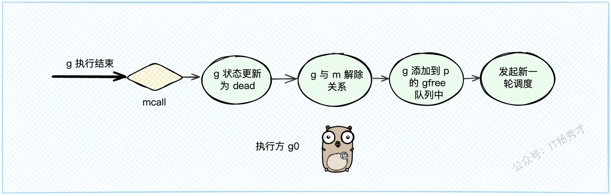
当一个G的任务执行完毕，它会调用goexit1，这是一个主动的"退休"申请。
-
在
goexit1里，它会调用mcall(goexit0)，这个mcall指令会把执行权从当前的G切换到M的g0上，并让g0去执行goexit0函数。 -
goexit0函数（此时由g0执行）会负责给这个退休的G办"后事"：-
把G的状态从
_Grunning更新为_Gdead。 -
清理G内部的数据。
-
解除G和M的绑定关系（
dropg）。 -
把这个G的结构体放到P的
gfree队列里，方便下次创建新G时复用，避免了内存的反复申请和释放。 -
最后，调用
schedule()，开始新一轮的调度。
-
|
|
🤝 高风亮节：主动让渡
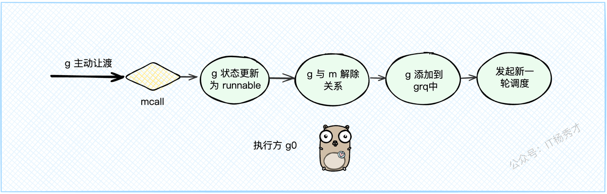
我们可以通过在代码里调用 runtime.Gosched() 来手动让一个G让出CPU。这个函数会做和goexit1类似的事情：
-
调用
mcall(gosched_m)，把执行权从当前G切换到g0。 -
g0执行gosched_m函数，它的逻辑是：-
把G的状态从
_Grunning改回_Grunnable。 -
解除G和M的绑定。
-
把这个G直接扔到全局队列GRQ中，等待下一次被调度。
-
调用
schedule()，开始新一轮调度。
-
|
|
💤 情非得已：阻塞让渡
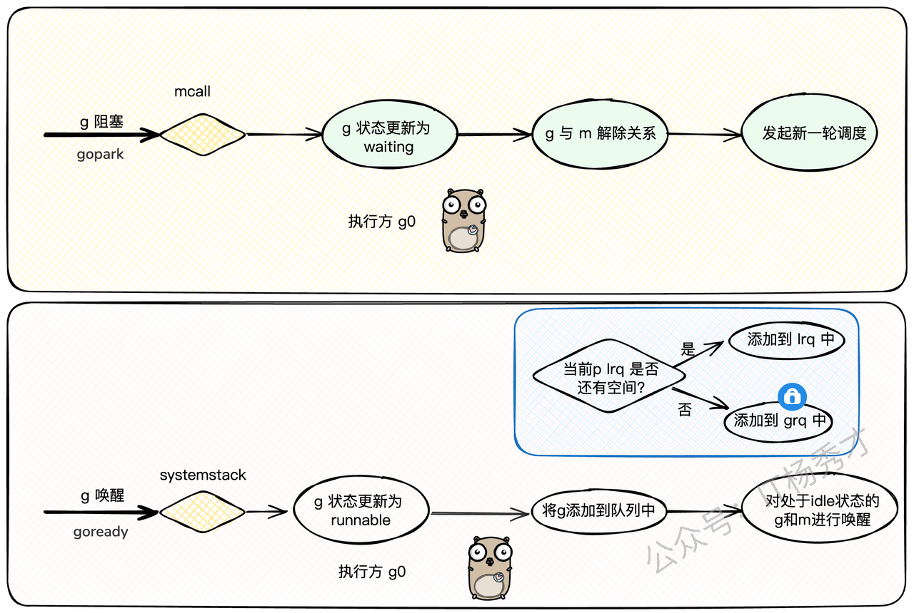
这是最常见的一种让渡方式。当G执行到需要等待某个外部条件的地方（比如读一个空的channel，或者等待一个锁），它就会被阻塞。
这个过程的核心是gopark函数：
-
当G需要阻塞时，上层函数（比如channel的读写逻辑）会调用
gopark。 -
gopark同样会调用mcall(park_m)，把执行权交给g0。 -
g0执行park_m，它会：-
把G的状态从
_Grunning改为_Gwaiting。 -
解除G和M的绑定。
-
注意：
_Gwaiting状态的G不会被放到任何就绪队列里！它会被上层调用者（比如channel）自己保管。 -
g0调用schedule()，寻找下一个G来执行。
-
当外部条件满足时（比如channel里有了数据），另一个G会调用goready函数来唤醒这个处于_Gwaiting状态的G。
goready会：
-
把目标G的状态从
_Gwaiting改回_Grunnable。 -
调用
runqput，把这个G重新放回到就绪队列（LRQ或GRQ）中。 -
调用
wakep，尝试唤醒一个空闲的P来处理这个刚被唤醒的G。
这一park一ready，完美地实现了G级别的阻塞和唤醒，整个过程高效且对用户透明。
以下是具体的代码分析：
|
|
与 gopark 相对的，是用于唤醒 g 的 goready 方法，其中会通过 systemstack 压栈切换至 g0 执行 ready 方法——将目标 g 状态由 waiting 改为 runnable，然后添加到就绪队列中.
|
|
|
|
⚡ 第三方视角：抢占式调度
前面说的"让渡"都是G的主动行为。但如果一个G是个"老赖"，执行一个超长的计算任务，一直不主动让出CPU怎么办？难道要让整个系统都等它一个吗？
当然不行！Go调度器还有一个"霸道总裁"的角色来强制干预，就是抢占（Preemption）。一个由外部力量发起的、为了维护整个系统公平和效率的"强制让位"过程。
hand off机制 ：将发起 syscall 的 g 和 m 绑定，但是解除 p 与 m 的绑定关系，使得此期间 p 存在和其他 m 结合的机会。保证这个 P 上的 G 还能继续被执行。
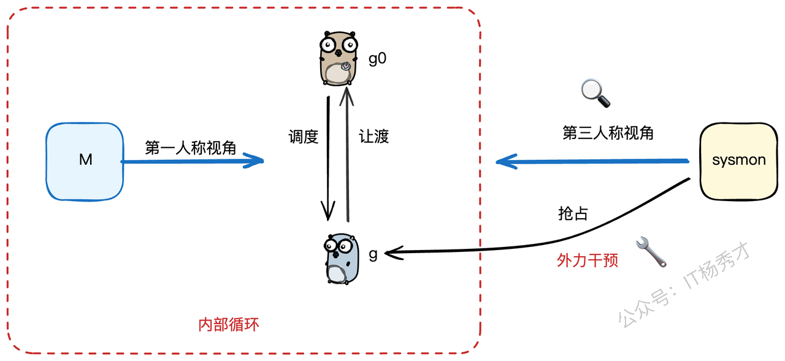
🛰️ 幕后英雄：无处不在的 sysmon
在我们的Go程序启动时，除了我们熟知的主线程外，runtime还会悄悄启动一个非常关键的后台线程——sysmon（System Monitor，系统监控）。
你可以把它想象成一个永不休息的"巡逻兵"，它独立于普通的G-P-M调度模型，持续地在后台循环执行。这个线程在整个程序生命周期里是全局唯一的，就像一个大管家，不知疲倦地监视着整个Go程序的运行状态。
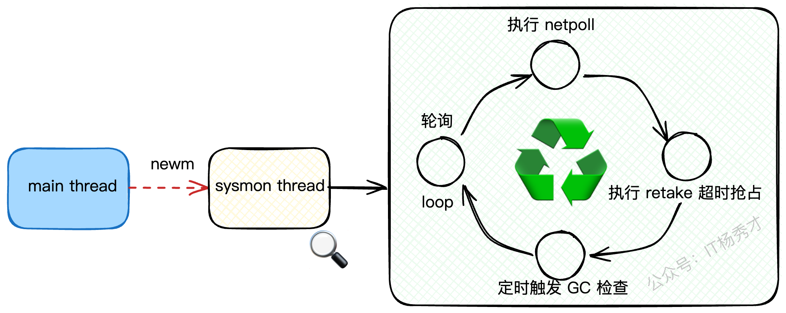
sysmon 的工作是一个永不停歇的循环，它主要关心三件大事儿：
-
网络轮询（netpoll）：检查有没有已经完成IO操作的网络连接，唤醒那些等待IO的Goroutine。
-
抢占（retake）：找出那些运行时间太长的Goroutine，毫不留情地把它"踹"下CPU。
-
GC触发检查：看看是不是时候该进行垃圾回收（GC）了。
这个 sysmon 线程是在哪里创建的呢？答案就在 main 函数启动的深处。Go运行时会通过 newm 创建一个新的系统线程（M）专门来跑 sysmon 这个函数。
它的核心工作逻辑大致如下：
|
|
可以看到，sysmon 的核心就是一个 for 死循环，每次循环都会执行一遍它的"三板斧"。而我们的抢占逻辑，就藏在 retake 这个函数里。retake 会根据Goroutine的不同状态，采取不同的抢占策略，主要分为两种：系统调用抢占和运行超时抢占。
📞 系统调用抢占
我们知道，系统调用（syscall）是连接用户态程序和操作系统内核的桥梁。但当一个M（系统线程）陷入系统调用时，它就会被操作系统挂起，暂时无法执行任何用户态代码。这对Go的调度器来说是个大问题，因为如果M上还绑定着一个P（处理器），那这个P也就跟着被闲置了，它所管理的本地Goroutine队列就得不到执行，造成了资源浪费。
Go的策略非常聪明：人走可以，但办公桌得留下！
当一个Goroutine即将发起系统调用时，调度器会做几件事：
-
解除P与M的绑定：把当前线程M和处理器P分离开。
-
状态更新：把Goroutine和P的状态都更新为
_Gsyscall和_Psyscall。 -
保留弱联系：虽然P和M分开了，但M会记住这个P（存放在
m.oldp），方便回来的时候能"再续前缘"。 -
寻找新机会：脱离了M的P，可以去和其他空闲的M结合，继续执行其他Goroutine，一点都不耽误事儿。
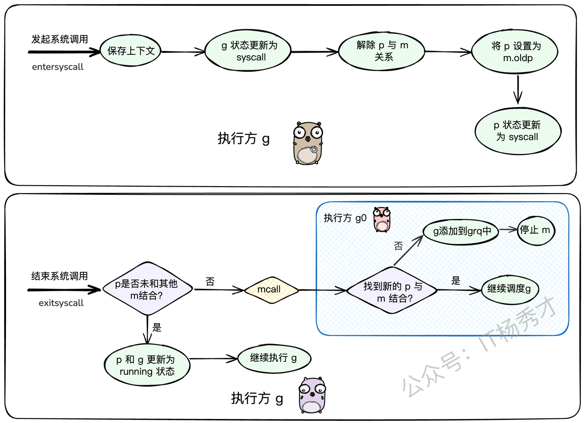
这个过程主要发生在 reentersyscall 函数中：
|
|
等系统调用结束，Goroutine从内核态返回时，会执行 exitsyscall 函数。这时它会尝试"复位归来"：
-
快速路径：先看看之前那个P（
oldp）是不是还单身（没有和其他M结合）。如果是，太好了，直接拿回来用，光速恢复执行。 -
慢速路径：如果P已经被别的M"拐走"了，那就没办法了。当前Goroutine会被切换到
g0栈，执行exitsyscall0，尝试为自己所在的M寻找一个新的空闲P。如果找到了，就继续执行；如果找不到，说明现在很忙，M就会被挂起，这个Goroutine则被放到全局队列中，等待下一次被调度
|
|
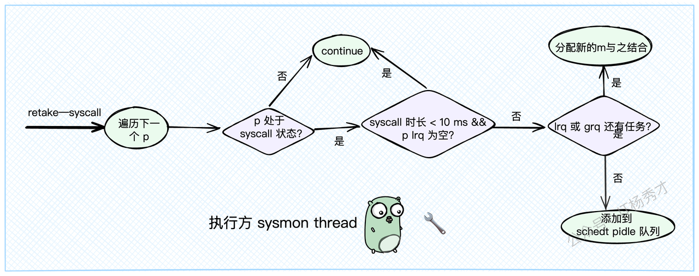
你可能会问，这和 sysmon 有什么关系？关系大了！sysmon 会在它的 retake 检查中，遍历所有的P。如果发现某个P长时间处于 _Psyscall 状态（默认超过10ms），或者这个P虽然在syscall，但它的本地队列里还有其他Goroutine在排队，sysmon 就会认为不能再等了，必须执行抢占。 它会调用 handoffp，强制把这个P从syscall的M那里"抢"过来，分配给一个新的或者空闲的M，去执行P本地队列里的其他任务。
|
|
|
|
⏱️ 运行超时抢占
除了系统调用，另一种需要抢占的场景就是Goroutine运行时间过长。比如一个纯计算的循环，没有任何IO或channel操作，它就会像个"钉子户"一样霸占着CPU。
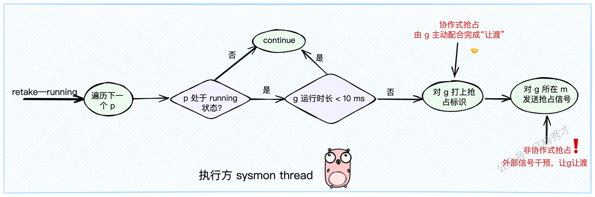
sysmon 在 retake 函数中同样会检查每个处于 _Prunning 状态的P。它会看当前P上的Goroutine从何时开始执行（schedwhen），如果执行时间超过了一个阈值（forcePreemptNS，通常是10ms），sysmon 就会认为需要抢占了。
|
|
这里的抢占又分为两种方式：一种是"好言相劝"，一种是"强行执法"。
🤲 协作式抢占
这是Go早期版本就有的抢占方式，比较"温柔"。sysmon 在决定抢占后，会调用 preemptone 函数。这个函数首先会给目标Goroutine打上一个"抢占标记"。具体来说，就是把 gp.preempt 设置为 true，同时把 gp.stackguard0 设置为一个特殊值 stackPreempt。
|
|
这个 stackguard0 标志位非常关键。Goroutine在执行函数调用时，尤其是可能导致栈扩容的场景下，会检查这个标志位。当它发现 stackguard0 变成了 stackPreempt，就知道：“哦，调度器想让我让位了”。于是，它就会很"自觉"地停止当前工作，调用 gopreempt_m，将自己重新放回全局队列，让出CPU。这个过程就叫做协作式抢占。
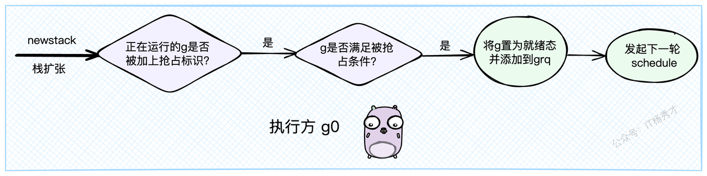
这个检查点通常在 newstack 函数中，也就是栈扩容的逻辑里：
|
|
但协作式抢占有个明显的缺点：如果一个Goroutine是个铁憨憨，一直在执行纯计算的死循环，没有任何函数调用，那它就永远没有机会去检查 stackguard0，也就无法响应抢占意图。这可怎么办？
🚨 非协作式抢占
为了解决协作式抢占的短板，Go 1.14 版本引入了基于信号的抢占机制，也就是非协作式抢占。这种方式就非常"硬核"了。
在 preemptone 函数中，除了设置协作标记，还会做一件事：向目标Goroutine所在的M（线程）发送一个信号 sigPreempt。
|
|
Go程序启动时，会注册一个信号处理器 sighandler 来处理各种信号，其中就包括了我们的 sigPreempt
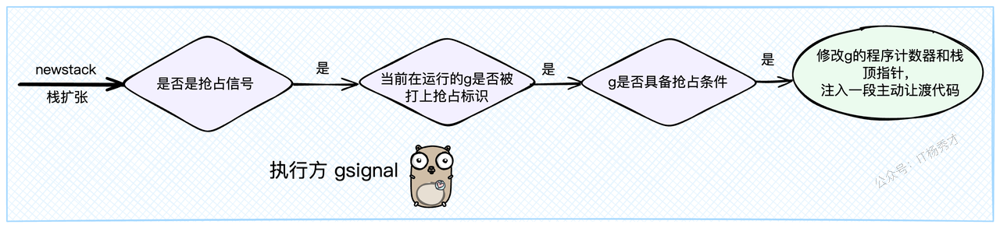
当M接收到 sigPreempt 信号后，操作系统会中断M的当前执行，转而去执行sighandler。 信号处理函数会发现这是一个抢占信号，然后检查当前的Goroutine是否满足被抢占的条件（例如，没有在执行一些敏感的运行时代码）。
如果条件满足，最关键的一步来了：sighandler会像一个黑客一样，直接修改G的寄存器信息，主要是程序计数器（PC）和栈顶指针（SP）。它会强行在G的执行流中"注入"一段代码，这段代码就是 asyncPreempt 函数。
|
|
这样一来，当信号处理结束，G恢复执行时，它下一条要执行的指令不再是原来被打断的地方，而是被篡改为了 asyncPreempt 函数。这个函数会立即调用 mcall 切换到 g0 栈，执行 gopreempt_m，最终完成让渡操作，和协作式抢占殊途同归。
|
|
至此，哪怕是最顽固的"钉子户"Goroutine，也会被这种强制手段给请下CPU，保证了调度器的公平性。
抢占是Go调度器为了公平和效率，由sysmon线程发起的强制性调度行为。
-
系统调用抢占：通过解绑P和M，让P可以继续服务其他Goroutine，避免因单个M阻塞导致整个P被浪费。
-
运行超时抢占：针对长时间运行的Goroutine，Go提供了两手准备：
-
协作式抢占：温柔地打个标记，让Goroutine在函数调用时"自觉"让出CPU。
-
非协作式抢占：对于不自觉的Goroutine，直接发送信号，通过修改PC和SP寄存器的方式，强行中断其执行，注入让渡逻辑。
-
正是有了这套精密的、软硬兼施的抢占机制，Go的并发调度才能如此健壮和高效，让我们能够放心地创建和使用海量的Goroutine。